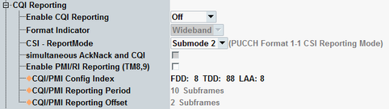

The following parameters configure channel quality indication (CQI) reporting. The reporting procedures are specified in 3GPP TS 36.213, section 7.2.
For scenarios without carrier aggregation, option R&S CMW-KS510 is required. For scenarios with carrier aggregation, R&S CMW-KS512 is required.
Which reports are sent by the UE depends on the transmission mode. If you want to see CQI, PMI and RI reports, you can use for example transmission mode 4.

Enables periodic CQI reporting ("Periodic") or disables CQI reporting completely ("Off").
For the scheduling types "Follow...", periodic CQI reporting is enabled automatically.
Periodic CQI reporting is described in 3GPP TS 36.213, section 7.2.2.
Remote command:The current software version supports only wideband CQI reporting. Subband CQI reporting is not supported.
Remote command:n/a
Configures the parameter "PUCCH_format1-1_CSI_reporting_mode", signaled to the UE.
The parameter is only relevant for transmission mode 9 with 8 CSI-RS antenna ports and wideband CQI reporting. See also 3GPP TS 36.213, section 7.2.2.
Remote command:Configures the parameter "simultaneousAckNackAndCQI", signaled to the UE.
The parameter indicates whether the simultaneous transmission of ACK/NACK and CQI is allowed.
For carrier aggregation scenarios, the checkbox is always disabled.
Remote command:In transmission mode 8 and 9, PMI and RI reports must be explicitly requested from the UE.
For the scheduling types "Follow...", PMI/RI reporting is enabled automatically.
"OFF" | The UE does not report PMI and RI values. For TM 9, reported CQI values are based on the cell-specific reference signal. |
"ON" | The UE reports also PMI and RI values (if reporting is enabled at all). For TM 9, reported values are based on the CSI reference signal. For PMI and RI reports, you must enable at least two CSI-RS antenna ports. For CQI reports, at least one antenna port is required. See "CSI-RS Antenna Ports". |
Specifies the "cqi-pmi-ConfigIndex" (ICQI/PMI) for FDD, TDD and LAA.
If you want to evaluate reports for several component carriers, you must configure compatible values, so that the carriers use different subframes for reporting. See "Configuration Hints".
Remote command:The displayed reporting period Np and the reporting offset NOFFSET,CQI result from the configured "cqi-pmi-ConfigIndex" and the duplex mode. They are derived using the mapping tables 7.2.2-1A and 7.2.2-1C in 3GPP TS 36.213.
For carrier aggregation scenarios, the information is available per component carrier.
Remote command:The eNodeB determines which subframes the UE can use for CQI, PMI and RI reporting, as specified in 3GPP TS 36.213, section 7.2.2.
The subframes for CQI and PMI reporting are determined by the parameter "cqi-pmi-ConfigIndex". This parameter is configurable. Via a mapping table, the "cqi-pmi-ConfigIndex" determines the reporting period Np and the reporting offset NOFFSET,CQI.
The subframes for RI reporting are determined by the parameters "MRI" and "NOFFSET,RI". The LTE signaling application uses "MRI" = 1 and "NOFFSET,RI" = -1.
Thus the subframes for RI reporting are located immediately before the subframes for CQI/PMI reporting.
If you want to evaluate reports for several component carriers, the carriers must use different subframes for reporting. The carrier configurations must not overlap. This rule is also important for scheduling types with a DL configuration that reacts to the reports, for example "Follow WB CQI".
Example, dual-carrier FDD, wrong configuration:
PCC: "cqi-pmi-ConfigIndex" = 3 means offset = 1, period = 5
SCC: "cqi-pmi-ConfigIndex" = 9 means offset = 2, period = 10
The following table shows the resulting configuration for two frames. There is a collision in subframe number 1, with CQI/PMI reporting for the PCC and RI reporting for the SCC.
Example, dual-carrier FDD, correct configuration:
PCC: "cqi-pmi-ConfigIndex" = 3 means offset = 1, period = 5
SCC: "cqi-pmi-ConfigIndex" = 5 means offset = 3, period = 5
The following table shows the resulting configuration. There is no collision.